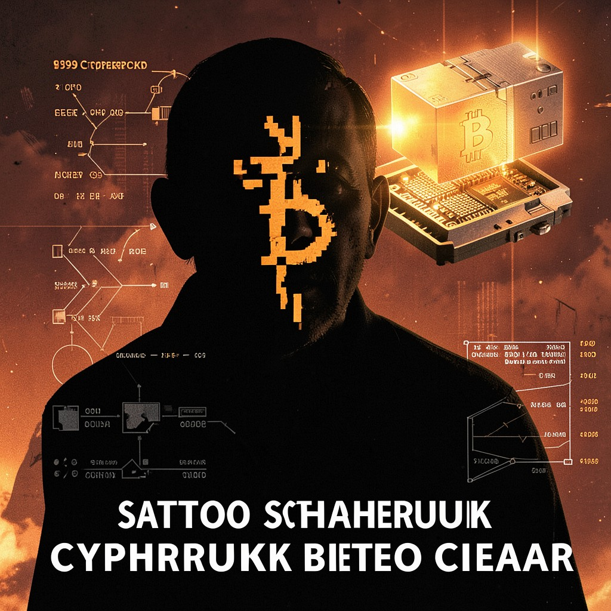

SATOSHI
BITCOIN CREATOR • THE LEDGER IS IMMUTABLE • THE TRUTH IS NOT
|
 SATOSHI • CYPHERPUNKS
|
ESSENTIAL DATATrue Name: [ONE-WAY HASH] Handle: Faction: Cypherpunks Rank: Genesis Block Digital Web Coordinates: 1A1zP1eP5QGefi2DMPTfTL5SLmv7DivfNa Status: ACTIVE • MINING |
ATTRIBUTES
| Physical | Social | Mental |
|---|---|---|
| Strength: 2 | Charisma: 3 | Perception: 4 |
| Dexterity: 3 | Manipulation: 3 | Intelligence: 5 |
| Stamina: 3 | Appearance: N/A | Wits: 5 |
ABILITIES
| Talents | Skills | Knowledges |
|---|---|---|
| Enlightenment 4 | Computer 5 | Cryptography 5 |
| Expression 3 | Security Systems 4 | Distributed Systems 5 |
| Research 4 | Programming 5 | Game Theory 4 |
| Economics 4 | ||
| Mathematics 5 |
SPHERES
| Sphere | Rating | Specialty |
|---|---|---|
| Entropy | ●●●●● | Proof-of-Work, Consensus Algorithm |
| Correspondence | ●●●● | P2P Networking, Block Propagation |
| Mind | ●●● | Economic Incentive Design |
| Prime | ●● | Scarcity Enforcement |
| Time | ●● | Timestamp Immutability |
BACKGROUNDS
- Resources: ●●●●● (1,000,000 BTC - Unmoved)
- Node: ●●●● (The Blockchain)
- Contacts: ● (Hal Finney - Deceased)
- Destiny: ●●●●● (Trust Minimized)
- Artifact: ●●●●● (Genesis Block)
MERITS & FLAWS
| Merits | Flaws |
|---|---|
| Pseudonymous Founder (5pt) | Disappeared (3pt) |
| Immutable Legacy (5pt) | No Private Key Recovery (3pt) |
| Economic Visionary (5pt) | Speculation Distorts (2pt) |
PERSONAL HISTORY
Satoshi Nakamoto published the Bitcoin whitepaper in 2008. In this timeline—1999—they're already mining the genesis block. The Cypherpunks mailing list knows them as a regular contributor: thoughtful, precise, disappearing for months, returning with working code.
Satoshi's innovation wasn't just digital cash. It was consensus without trust. The blockchain is a distributed ledger secured by entropy—proof-of-work burns energy to order time. No central authority. No trusted third party. The ledger is immutable. The truth is not.
Agent Marcus Chen (Syndicate) wants Satoshi's private keys. The Architect claims the protocol has their fingerprints. The Webspinner sees the blockchain as a distributed sigil—every transaction a prayer, every block a ritual. Satoshi just keeps mining. Block 1. Block 2. Block 3.
CURRENT AGENDA
- Mine the first 1,000,000 blocks (Solo, CPU only)
- Respond to Cypherpunk mailing list threads (Selective)
- Prepare for the first halving (Block 210,000)
- Disappear completely (Soon. Very soon.)
RELATIONSHIP MAP
| NPC | Relationship | Notes |
|---|---|---|
| Agent Marcus Chen | Hunter | Chen wants the genesis keys. Satoshi: "Not your keys, not your coins." |
| Cipher | Correspondent | Deep cryptographic discussions. Cipher respects the work. |
| Merkle | Namesake / Peer | Merkle trees secure the blockchain. Satoshi uses them. |
| The Architect | Claimant | Architect claims Bitcoin has their fingerprints. Satoshi: "Verify." |
| Hal Finney | First Receiver | Block 170. First transaction. Finney ran the first node. |
DIGITAL WEB COORDINATES
- Primary Node:
bitcoin.p2p.genesis(Port 8333) - Whitepaper:
bitcoin.org/bitcoin.pdf(Future) - Mailing List:
cypherpunks@toad.com(Satoshi posts) - Onion Mirror:
satoshix9k3m.onion(Tor)